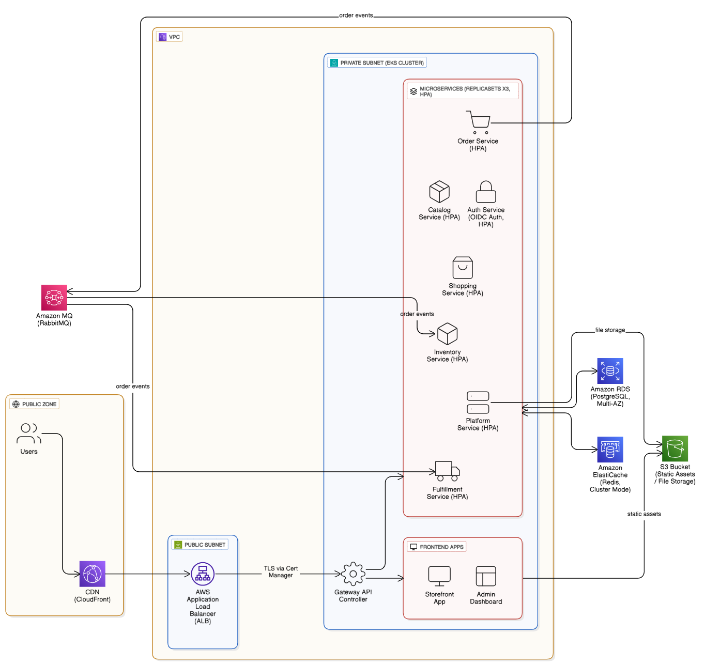
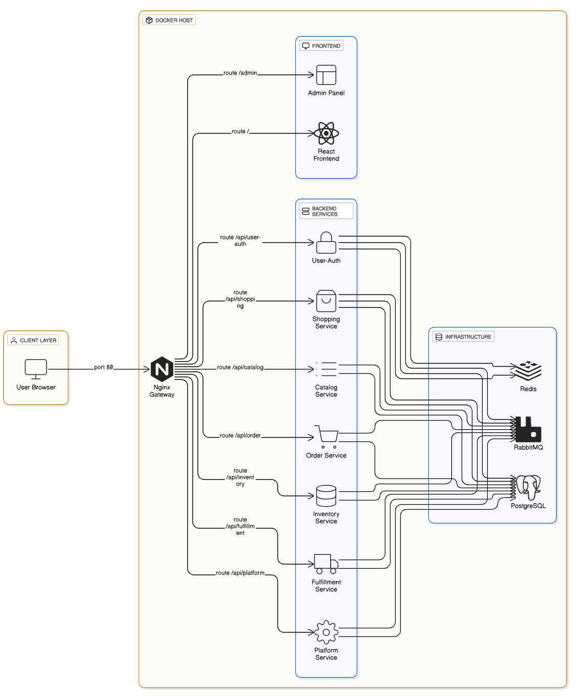
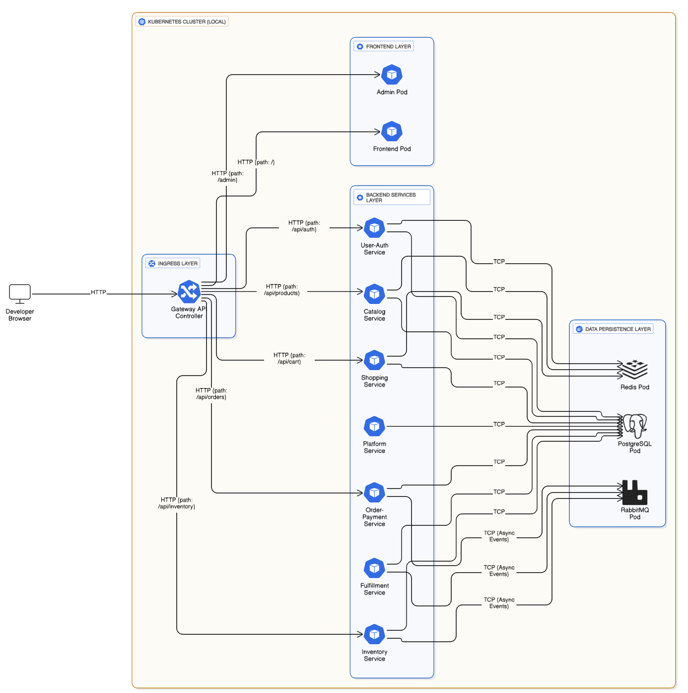

L'évolution rapide du commerce électronique impose aux entreprises de disposer de plateformes logicielles à la fois robustes, évolutives et capables d'absorber des charges de trafic variables. Les architectures monolithiques traditionnelles, longtemps privilégiées pour leur simplicité de mise en œuvre, montrent leurs limites dès lors qu'il s'agit de faire évoluer indépendamment plusieurs domaines métiers, de déployer fréquemment de nouvelles fonctionnalités, ou de garantir une haute disponibilité.
Dans ce contexte, ce projet de fin d'études porte sur la conception, le développement et le déploiement d'une plateforme e-commerce complète en architecture microservices, avec une chaîne d'intégration et de livraison continues (CI/CD) entièrement automatisée selon les principes GitOps. Le système couvre l'ensemble du cycle de vie applicatif : du développement local à la mise en production sur un serveur dédié, en passant par les tests automatisés, la construction d'images Docker, et le déploiement déclaratif sur un cluster Kubernetes.
La problématique centrale traitée par ce projet est la suivante : comment construire et déployer une plateforme e-commerce moderne en respectant les bonnes pratiques DevOps actuelles (microservices, conteneurisation, orchestration, observabilité, infrastructure-as-code), tout en garantissant un cycle de livraison rapide, traçable et réversible ?
Les objectifs de ce rapport sont triples :
Le présent rapport est organisé en quatre chapitres. Le premier chapitre présente le contexte du stage et les enjeux du projet. Le deuxième chapitre détaille l'analyse fonctionnelle et la conception. Le troisième chapitre décrit l'implémentation et les choix techniques. Enfin, le quatrième chapitre aborde la validation et les tests effectués. Une conclusion générale dresse le bilan du travail et présente les perspectives d'amélioration.
Le projet, baptisé Ecommerce, vise à concevoir une plateforme e-commerce complète selon les standards modernes du développement cloud-native. Au-delà des aspects fonctionnels classiques d'un site marchand (catalogue produits, panier, commande, paiement, livraison), le projet met l'accent sur l'ingénierie de production : conteneurisation, orchestration, observabilité, automatisation du déploiement.
Les objectifs détaillés sont :
La plateforme couvre les fonctionnalités suivantes :
user, admin, editor) ;Plusieurs enjeux techniques structurants ont guidé la conception :
Le projet a été mené selon une approche itérative et incrémentale, inspirée de la méthodologie Agile. Le développement s'est organisé en cycles courts, chaque itération aboutissant à un livrable fonctionnel testable. Le suivi de version a été assuré via Git avec un dépôt central hébergé sur GitHub (github.com/Montassur/microServiceApp).
Les outils utilisés pour la gestion et le développement comprennent :
L'analyse des sources du projet révèle les fonctionnalités majeures suivantes, regroupées par acteur :
Côté client (storefront) :
Côté administrateur (admin dashboard) :
| Catégorie | Exigence |
|---|---|
| Performance | Temps de réponse API inférieur à 500 ms en p95 |
| Disponibilité | Architecture conçue pour la haute disponibilité (2 répliques par service) |
| Scalabilité | Capacité à augmenter horizontalement chaque service indépendamment |
| Sécurité | Authentification JWT, HTTPS systématique, secrets chiffrés en dépôt Git |
| Observabilité | Collecte des métriques applicatives, tableaux de bord temps-réel |
| Maintenabilité | Code modulaire, configuration externalisée, tests automatisés |
| Portabilité | Déploiement identique en local (Docker Compose) et en production (Kubernetes) |
L'architecture retenue est une architecture microservices à dix services, orchestrée derrière une passerelle Nginx. Les services backend communiquent de manière synchrone via HTTP REST pour les requêtes utilisateur, et de manière asynchrone via le broker RabbitMQ pour les événements métier.
L'organisation en couches est la suivante :
gateway) qui route les requêtes vers le bon service backend selon le préfixe d'URL (/api/auth, /api/products, etc.) ;
| Couche | Technologie retenue | Justification |
|---|---|---|
| Frontend | React 19 + Vite | Écosystème mature, virtual DOM performant, build extrêmement rapide via Vite |
| API Gateway | Nginx | Reverse-proxy léger, configuration déclarative, performances éprouvées |
| Backend | Node.js 22 + Express | Adapté aux APIs I/O-bound, écosystème npm riche, courbe d'apprentissage faible |
| Base de données | PostgreSQL 17 | SGBD relationnel robuste, support JSON natif, contraintes référentielles strictes |
| Cache / recherche | Redis Stack (RediSearch) | Cache en mémoire ultra-rapide, moteur de recherche full-text intégré |
| Messagerie | RabbitMQ 4.2 | Broker AMQP éprouvé, garanties de livraison configurables, interface d'administration |
| Conteneurisation | Docker | Standard de facto pour la conteneurisation |
| Orchestration | Kubernetes (k3s) | Distribution allégée certifiée CNCF, idéale pour serveur unique |
| GitOps | ArgoCD | Synchronisation automatique cluster ⇄ dépôt Git, interface graphique |
| Secrets | Sealed Secrets | Chiffrement par clé publique, secrets versionnés en Git en toute sécurité |
| Observabilité | Prometheus + Grafana | Standard de l'observabilité cloud-native |
| TLS | Let's Encrypt + Apache | Certificats gratuits, renouvellement automatique |

Le schéma relationnel comporte dix-sept tables réparties selon les domaines fonctionnels des services. Les entités principales sont :
| Table | Domaine | Rôle |
|---|---|---|
users | user-auth | Comptes utilisateurs (email, mot de passe hashé, rôle, statut) |
sessions | user-auth | Jetons de rafraîchissement, traçabilité d'IP |
notifications | user-auth | Notifications applicatives |
products | catalog | Catalogue produits |
reviews | catalog | Avis utilisateurs |
product_recommendations | catalog | Suggestions automatiques |
orders | order-payment | Commandes |
order_items | order-payment | Lignes de commande |
payments | order-payment | Transactions Stripe |
cart_items | shopping | Lignes du panier |
wishlists | shopping | Liste de souhaits |
inventory | inventory | Stocks par produit |
shipments | fulfillment | Expéditions |
coupons | fulfillment | Coupons promotionnels |
audit_logs | platform | Audit des actions sensibles |
analytics_events | platform | Métriques métier |
La table users constitue la racine référentielle. Les sessions, notifications, commandes, paniers, listes de souhaits et logs y sont rattachés via clés étrangères avec contrainte ON DELETE CASCADE. Le schéma comprend plus de 25 index optimisant les requêtes par email, rôle, statut, catégorie produit et date.
Le storefront est conçu autour des pages suivantes : page d'accueil (vitrine produit, recommandations), catalogue (grille produits avec filtres par catégorie), panier (récapitulatif, modification quantités, passage en caisse), commande (formulaire de paiement, confirmation), profil utilisateur (tableau de bord personnel, historique des commandes), authentification (inscription, connexion).
L'interface admin propose un dashboard avec indicateurs clés (commandes, revenus, utilisateurs actifs), la gestion des utilisateurs (tableau filtrable, création, édition, désactivation, suppression par lot, export CSV), la gestion des produits, des coupons, et les paramètres généraux.
| Domaine | Technologie | Version |
|---|---|---|
| Runtime backend | Node.js | 22-alpine |
| Framework backend | Express | 4.x |
| Frontend | React | 19.x |
| Build frontend | Vite | 7.x |
| Base de données | PostgreSQL | 17.2-alpine |
| Cache | Redis Stack | 8.x |
| Broker messages | RabbitMQ | 4.2-management-alpine |
| Reverse proxy | Nginx | 1.28-alpine |
| Orchestrateur | Kubernetes (k3s) | v1.35 |
| GitOps | ArgoCD | v2.x (stable) |
| Monitoring | Prometheus | v3.2.0 |
| Visualisation | Grafana | 11.5.0 |
| Secrets chiffrés | Sealed Secrets | v0.27.1 |
| Ingress | NGINX Ingress Controller | v1.11.3 |
microServiceApp/ ├── services/ # 10 microservices │ ├── frontend/ # React storefront │ ├── admin/ # React admin │ ├── gateway/ # Nginx reverse-proxy │ ├── user-auth/ # auth + RBAC │ ├── catalog/ # produits + recherche │ ├── order-payment/ # commandes + Stripe │ ├── fulfillment/ # logistique │ ├── shopping/ # panier + wishlist │ ├── platform/ # audit, analytics │ └── inventory/ # gestion stocks ├── infrastructure/k8s/ │ ├── base/ # Manifestes Kustomize de base │ └── overlays/ │ ├── development/ │ └── production/ # SealedSecret + Ingress + GHCR ├── database/ │ ├── init.sql # Schéma + 3 utilisateurs seed │ └── seed_demo_data.sql ├── scripts/vps-deploy.sh # Déploiement automatisé VPS ├── argocd/applications.yaml # ArgoCD Application ├── .github/workflows/ci.yml # Pipeline CI/CD ├── docker-compose.yml └── docs/ # 11 guides techniques
Chaque service backend respecte la même structure standardisée :
services/<nom>/
├── Dockerfile
├── package.json
└── src/
├── index.js # Point d'entrée Express
├── lib/
│ ├── db.js # Pool PostgreSQL
│ ├── redis.js # Client Redis
│ ├── rabbitmq.js # Connexion AMQP
│ ├── logger.js # Winston
│ └── metrics.js # prom-client (Prometheus)
├── middleware/
│ ├── auth.js
│ └── metrics.js
└── modules/<feature>/
├── routes.js # Routes Express
├── init.js # Création des tables
└── events.js # Publishers/consumers RabbitMQ
| Service | Préfixe d'URL | Exemples d'endpoints |
|---|---|---|
user-auth | /api/auth, /api/users | POST /login, POST /register, GET /me, POST /refresh |
catalog | /api/products, /api/reviews, /api/search | CRUD produits, recherche full-text, recommandations |
order-payment | /api/orders, /api/payments | POST commande, POST paiement Stripe |
fulfillment | /api/shipping, /api/coupons | Suivi expédition, validation coupons |
shopping | /api/cart, /api/wishlists | Manipulation panier et wishlist |
platform | /api/analytics, /api/audit | Métriques, journaux d'audit, exports |
inventory | /api/inventory | Consultation stocks par produit |
Les services communiquent de manière asynchrone via dix files d'événements. La figure ci-dessous illustre le flux principal d'une commande :
Cette architecture événementielle implémente le pattern Saga : la suite ordonnée Cart → Order → Payment → Fulfillment est orchestrée par enchaînement d'événements, chaque service contribuant à sa partie sans dépendance synchrone forte.
Le storefront est une Single Page Application React 19 + Vite, composée de pages (Products, Cart, Orders, Profile, Dashboard, Login, Signup), de contexts globaux (AuthContext, CartContext), et d'un client API basé sur Axios avec interception JWT et rafraîchissement automatique du token.
L'application admin propose des pages Dashboard, Users (avec recherche, filtres rôle/statut, suppression en masse, export CSV), Products, Coupons et Settings. Les notifications utilisateur sont gérées via un ToastContext dédié.
Le cœur du projet est la chaîne CI/CD entièrement automatisée définie dans .github/workflows/ci.yml. Le schéma suivant en décrit le flux complet :
git push à la productionLes cinq étapes du pipeline CI/CD sont :
branch et sha-<commit> ;kubectl kustomize sur les overlays développement et production ;infrastructure/k8s/overlays/production/kustomization.yaml avec le SHA du nouveau commit, puis poussant le changement avec le marqueur [skip ci].Le service catalog utilise le module RediSearch de Redis Stack pour offrir une recherche full-text instantanée. À chaque création/modification d'un produit, un événement RabbitMQ déclenche la mise à jour de l'index (JSON.SET, FT.CREATE).
Chaque service backend expose un endpoint /metrics au format Prometheus. Le scrapping est effectué toutes les 15 secondes. Trois tableaux de bord Grafana sont provisionnés automatiquement :
La sécurité a été abordée à plusieurs niveaux :
limit_req_zone) contre les abus ;
L'outil ESLint est exécuté automatiquement à chaque commit sur les 9 services disposant de code JavaScript/JSX. La configuration applique les règles strictes pour React 19 (react-hooks/purity, react-hooks/exhaustive-deps, react-refresh/only-export-components).
Le framework Jest est configuré sur les 7 services backend. Les scripts npm test sont prêts à recevoir des suites de tests dans le dossier __tests__/. À l'heure actuelle, la suite est volontairement vide (--passWithNoTests activé pour ne pas bloquer le CI), en attente d'évolution.
Le pipeline CI inclut une étape k8s-validate qui exécute kubectl kustomize sur les overlays développement et production, garantissant la validité syntaxique des manifestes et la résolution de toutes les références (ConfigMap, Secret, Service).
La recette fonctionnelle a été conduite manuellement sur les flux utilisateurs critiques : inscription, connexion, navigation produit, ajout au panier, passage de commande, consultation des commandes par l'administrateur.
| Job | Couverture | Résultat |
|---|---|---|
| Lint | 9 services | 9/9 OK |
| Test | 7 services backend | 7/7 OK (suite vide) |
| Build | 10 images Docker | 10/10 publiées sur GHCR |
| K8s-validate | 2 overlays (dev + prod) | 30 ressources générées |
| CD | Bump SHA prod | Commit auto poussé |
| Namespace | Composants | Pods |
|---|---|---|
ecommerce-prod | 2 × 12 services applicatifs + 1 × postgres | 25 |
monitoring | Prometheus + Grafana | 2 |
argocd | Plateforme ArgoCD | 7 |
ingress-nginx | Contrôleur Ingress | 1 |
kube-system | Composants k3s | ≈ 8 |
kubectl get pods -A sur le cluster de production]Les cas d'usage suivants ont été validés sur l'environnement de production accessible publiquement via HTTPS :
| Cas d'usage | URL testée | Résultat |
|---|---|---|
| Affichage storefront | https://ecommerce.<domain> | HTTP 200 |
| Inscription utilisateur | POST /api/auth/register | HTTP 201 + utilisateur en base |
| Connexion | POST /api/auth/login | HTTP 200 + JWT renvoyé |
| Consultation produits | GET /api/products | HTTP 200 + JSON |
| Dashboard admin | https://admin.<domain> | HTTP 200, accès contrôlé |
| Interface ArgoCD | https://argocd.<domain> | HTTP 200, synchronisation visible |
| Grafana | https://grafana.<domain> | Tableaux de bord opérationnels |
| RabbitMQ Management | https://rabbitmq.<domain> | 10 files actives |
Ce projet de fin d'études a permis de concevoir, développer et déployer une plateforme e-commerce complète en architecture microservices mise en production sur un cluster Kubernetes. Le système comprend dix microservices spécialisés, une chaîne d'intégration et de livraison continues entièrement automatisée selon les principes GitOps, ainsi qu'une couche d'observabilité opérationnelle (Prometheus, Grafana).
L'ensemble est accessible publiquement via six sous-domaines sécurisés en HTTPS, et tout changement de code validé est déployé automatiquement en production en moins de dix minutes. La séparation stricte entre l'environnement de développement local (Docker Compose) et la production (Kubernetes) garantit la sécurité de la chaîne de livraison.
Compétences techniques :
Compétences transversales :
| Difficulté | Solution apportée |
|---|---|
| Conflit de ports entre Apache (sites tiers) et NGINX Ingress | Mise en place de NGINX Ingress en NodePort 30080 et configuration d'Apache en reverse-proxy SSL |
Schéma de base incohérent (colonne name manquante) | Ajout d'un ALTER TABLE ... ADD COLUMN IF NOT EXISTS idempotent |
| Cycle de dépendances Compose (frontend/admin/gateway) | Utilisation du résolveur DNS Docker (127.0.0.11) avec variables Nginx |
| Identifiants RabbitMQ incohérents K8s/Node | Construction de l'URL AMQP via substitution $(VAR) Kubernetes |
| Synchronisation ArgoCD échouant sur Gateway API | Retrait des ressources Gateway/HTTPRoute de l'overlay production |
pg_dump → S3 ;Ce projet constitue une base solide et professionnelle, démontrant la maîtrise complète d'une chaîne de production cloud-native moderne — depuis la conception orientée domaines jusqu'au déploiement automatisé sur infrastructure réelle.
apiVersion: argoproj.io/v1alpha1
kind: Application
metadata:
name: ecommerce-production
namespace: argocd
spec:
project: default
source:
repoURL: https://github.com/Montassur/microServiceApp.git
targetRevision: main
path: infrastructure/k8s/overlays/production
destination:
server: https://kubernetes.default.svc
namespace: ecommerce-prod
syncPolicy:
automated:
prune: true
selfHeal: true
syncOptions:
- CreateNamespace=true
| Terme | Définition |
|---|---|
| GitOps | Méthodologie où le dépôt Git est la source de vérité unique pour l'état souhaité du système. Tout changement passe par un commit. |
| Kustomize | Outil natif Kubernetes permettant de générer des variantes de manifestes via overlays sans templating. |
| ArgoCD | Contrôleur Kubernetes qui synchronise continuellement l'état du cluster avec le dépôt Git de référence. |
| Saga | Pattern de transaction distribuée par enchaînement d'événements compensables. |
| Sealed Secrets | Contrôleur qui déchiffre dans le cluster des secrets chiffrés versionnés en Git. |
| Ingress | Ressource Kubernetes qui expose des services HTTP/HTTPS depuis l'extérieur du cluster. |
| RBAC | Role-Based Access Control : contrôle d'accès basé sur les rôles assignés aux utilisateurs. |
| JWT | JSON Web Token : format de jeton signé pour l'authentification stateless. |
| k3s | Distribution Kubernetes légère certifiée CNCF, conçue pour les déploiements edge et single-node. |
| GHCR | GitHub Container Registry : registre d'images Docker hébergé par GitHub. |
| Pod | Plus petite unité déployable dans Kubernetes : regroupement de conteneurs partageant le réseau. |
| Deployment | Ressource Kubernetes qui gère le cycle de vie des Pods (mise à l'échelle, mise à jour progressive). |
| StatefulSet | Variante de Deployment pour les applications avec état (base de données, par exemple). |
github.com/Montassur/microServiceAppkubernetes.io/docsargo-cd.readthedocs.iodocs.k3s.iogithub.com/bitnami-labs/sealed-secretsprometheus.io/docsgrafana.com/docsrabbitmq.com/tutorials/amqp-concepts12factor.net